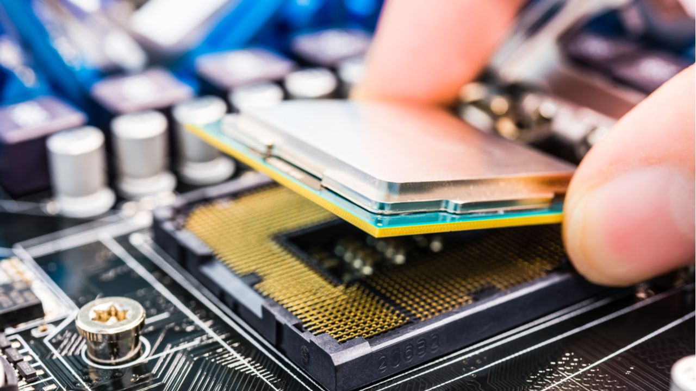
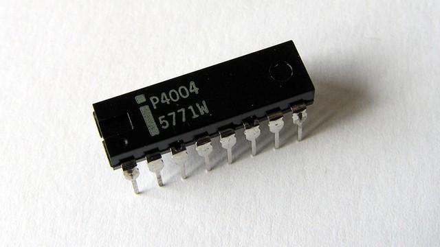

História dos Processadores
Levamos décadas até chegar aos modelos utilizados atualmente, antes não era
possível utilizar todos os softwares pois estes não eram compatíveis com todos
os Hardwares, isto levou a cada computador utilizasse plataformas diferentes,
e com isto chegava a haver incompatibilidade entre componentes do mesmo
fabricante.
Os computadores primordiais eram bastante diferentes dos que conhecemos
CPU é a componente mais importante do Computador.
atualmente, comparados com os atuais estes n teriam capacidade de armazenar
programas, chegando a haver projetos com a ideia de armazenar softwares no
seu interior, mas esta ideia acabou por ser posta de lado.
Em 1945, surgiu a ideia de criar uma unidade capaz de executar diversas
tarefas, esta ideia publicada por Jhon Von Neumann foi a responsável pela
origem dos primeiros modelos de processadores da forma que conhecemos atu-
almente. Durante a década de 50 começa a ser repensada a organização interna
dos computadores, e os processadores começam a ter funcionalidades básicas.
No começo da década de 60, foi desenvolvida uma abordagem diferente, a
IBM planejou uma família de computadores que poderia executar o mesmo
Software, mas com diferente capacidade de processamento, passando os progra-
mas a deixarem de ser dependentes das máquinas

Intel 4004.
Geração Pré-x86
O Intel 4004 foi o primeiro a ser lançado, desenvolvido para ser utilizado
em calculadoras, este CPU opera com um clock máximo de 740 KHz e tinha
capacidade de calcular até 92 mil instruções por segundo a uma velocidade de 11ms.
Após o sucesso do 4004, surge o 8008 em 1971 este era uma CPU de 8 bits
e tinha capacidade de armazenar o endereço de 16KB de memoria o seu clock
trabalhava a uma frequência máxima de 0.8 Mhz. Em 1974, este foi substituído
pelo intel 8080 que sendo 8 bits, podia executar algumas operações de 16 bits,
este foi desenvolvido inicialmente para o controlo de misseis teleguiados, e podia
fazer referência a cerca de 64kb de memoria
Processadores de 32 bits
Com lançamento no final dos anos 80, estas trabalhavam com clocks que alcançavam valores até 100 Mhz, o intel 80386 por exemplo já permitia que programas utilizassem o processador de forma cooperativa

Intel 80386.
A luta entre Intel e AMD
Após o lançamento do primeiro Pentium em 1993 que apresentava melhorias
significativas em relação aos antigos modelos, com um clock inicial de 100 Mhz
com o tempo acabou por chegar a 200 Mhz, em 1995 a intel lançou o Pentium
Pro, a sexta geração dos x86.
Paralelamente a AMD começava a ganhar mercado com modelos semelhantes,
o AMD K5 concorrente ao primeiro Pentium mas poucos anos depois
surgiu o Pentium II com clock capaz de atingir 450 Mhz, nessa mesma época
aparecia os AMD k6 com capacidade similar aos intel, por este motivo as
empresas iniciaram uma corrida para quem alcançava o melhor desempenho.
A lei de Moore
Gordon Moore, Cofounder And Chairman Emeritus, Intel